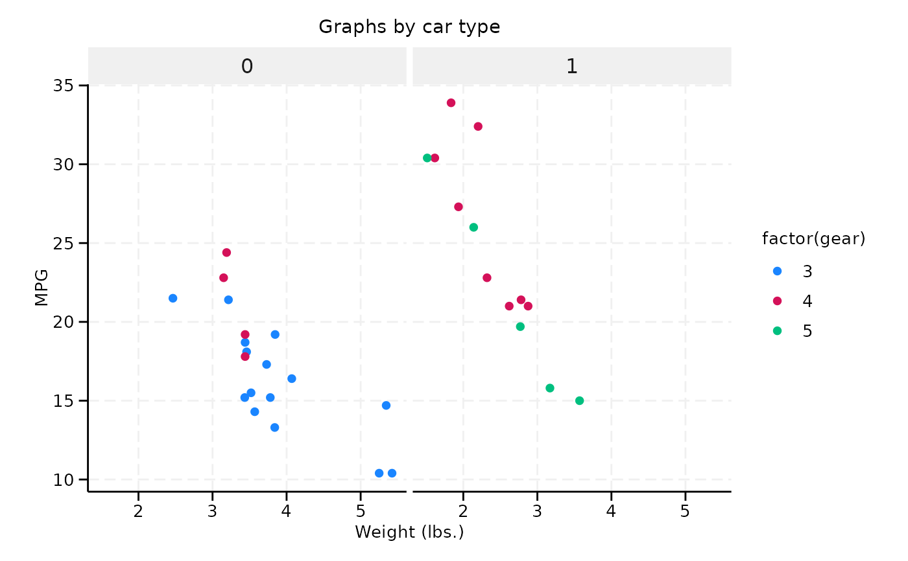
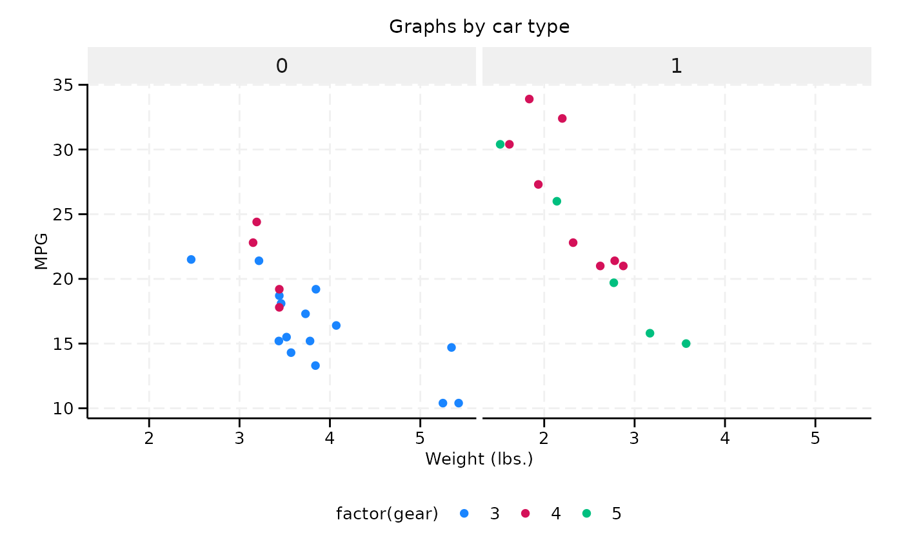
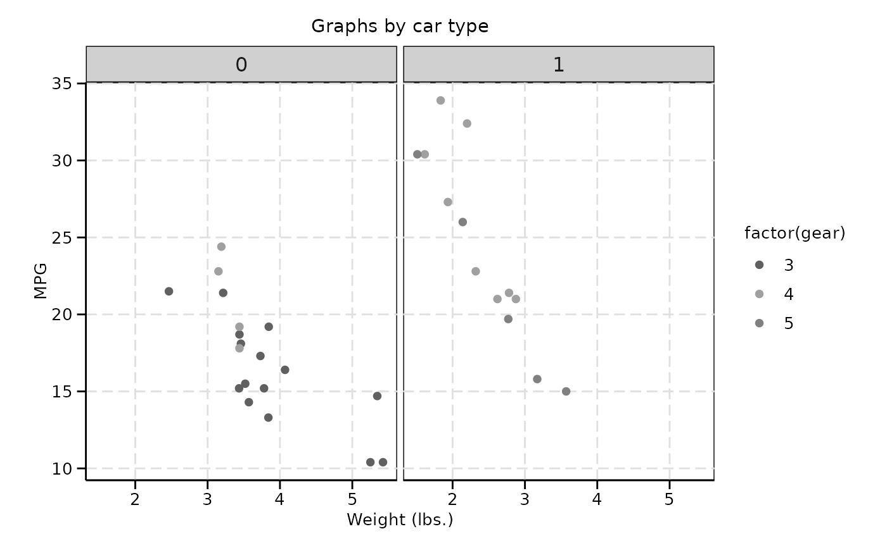
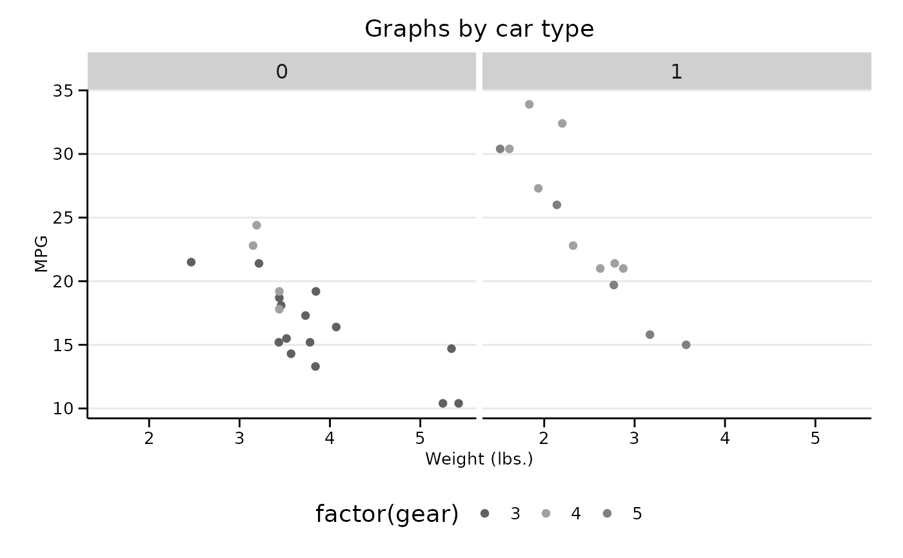
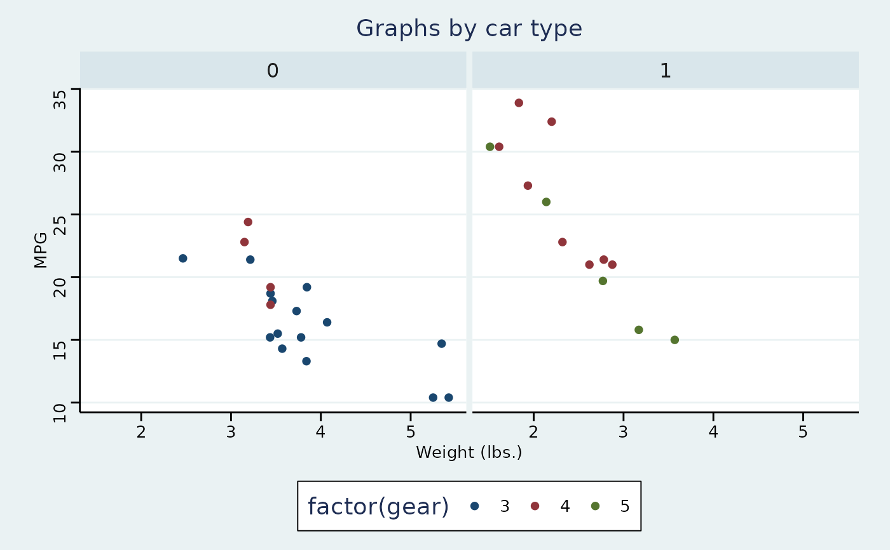
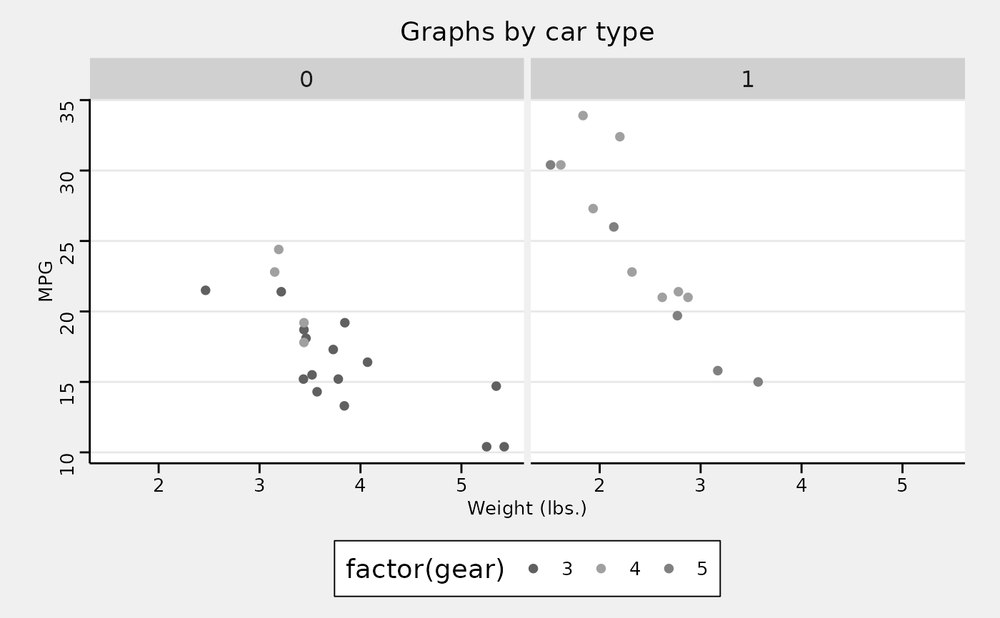
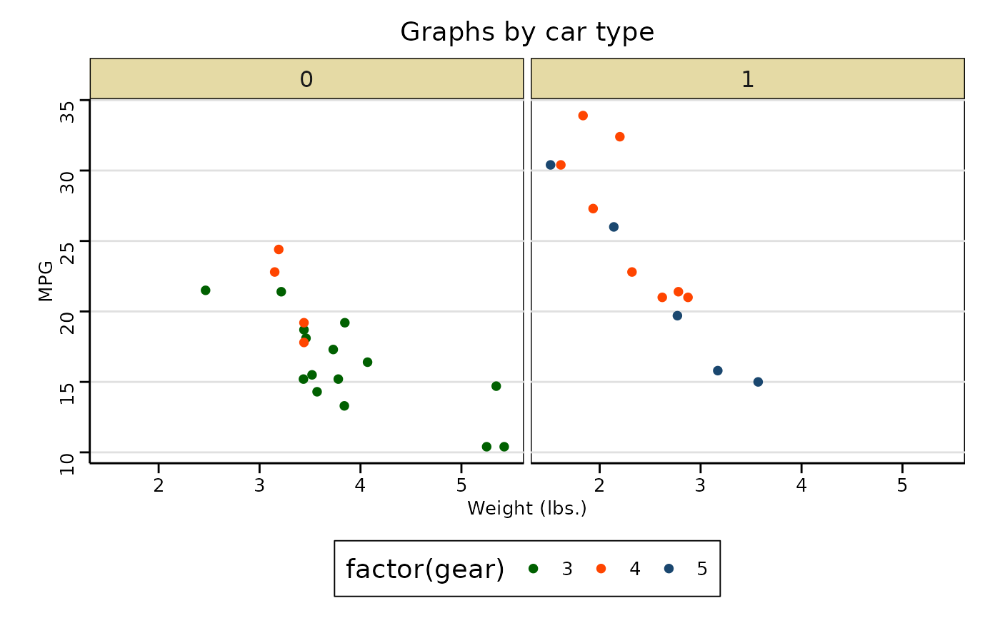
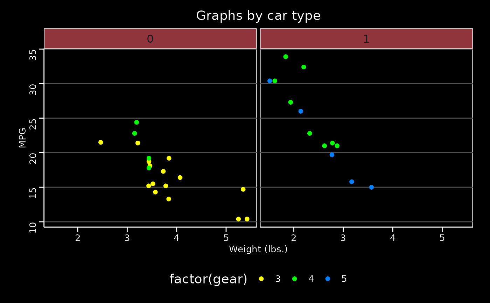
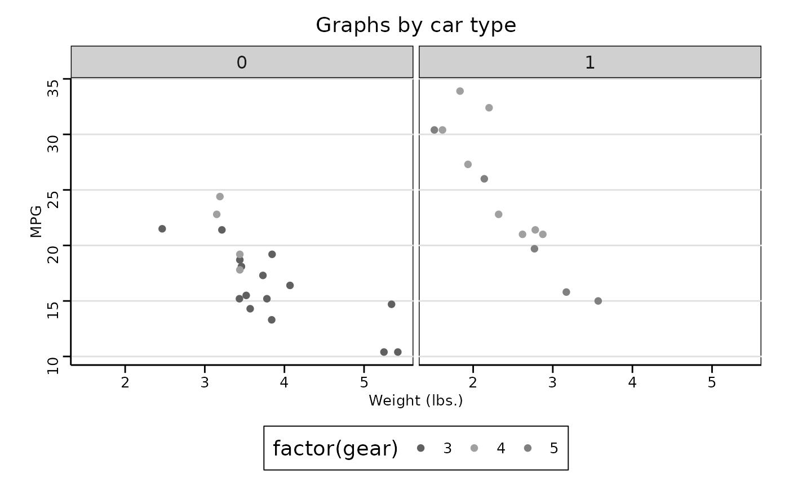

Themes based on Stata graph schemes
Arguments
- base_size
base font size, given in pts.
- base_family
base font family
- scheme
One of "stcolor", "stcolor_alt", "stmono1", "stmono2", "stsj", "s2color", "s2mono", "s1color", "s1rcolor", "s1mono", "s2manual", "s1manual", or "sj". If
NULL, the default, "s2color" is used and a deprecation message is issued; this default becomes "stcolor" in ggthemes 7.0.0.
Details
These themes approximate Stata schemes using the features ggplot2. The graphical models of Stata and ggplot2 differ in various ways that make an exact replication impossible (or more difficult than it is worth). Some features in Stata schemes not in ggplot2: defaults for specific graph types, different levels of titles, captions and notes. These themes also adopt some of the ggplot2 defaults, and more effort was made to match the colors and sizes of major elements than in matching the margins.
The schemes fall into two generations. "stcolor",
"stcolor_alt", "stmono1", "stmono2" and "stsj"
are the st family introduced in Stata 18, of which "stcolor" is
Stata's current factory default: a white background, a dashed grid on both
axes, horizontal y-axis labels, and a borderless legend beside the plot.
The remaining schemes are the s1/s2 families that were the default through
Stata 17.
Stata expresses text sizes as a percentage of graph height, while ggplot2
uses absolute points, so the two agree only at a particular graph size.
The relative sizes here match Stata exactly; base_size = 12.4
reproduces Stata's absolute sizes at its default 7.5 by 4.5 inch graph.
Two further differences are not expressible in a ggplot2 theme: the number
of legend columns (set by guide_legend() rather than
the theme) and Stata's small default marker size (a geom default).
Examples
library("ggplot2")
p <- ggplot(mtcars) +
geom_point(aes(x = wt, y = mpg, colour = factor(gear))) +
facet_wrap(~am) +
labs(
title = "Graphs by car type",
x = "Weight (lbs.)",
y = "MPG"
)
# The st family, Stata's default since Stata 18
# stcolor
p + theme_stata(scheme = "stcolor") + scale_colour_stata("stcolor")

# stcolor_alt, which puts the legend below the plot
p + theme_stata(scheme = "stcolor_alt") + scale_colour_stata("stcolor")

# stmono1
p + theme_stata(scheme = "stmono1") + scale_colour_stata("mono")

# stmono2
p + theme_stata(scheme = "stmono2") + scale_colour_stata("mono")
 # stsj, the Stata Journal scheme
p + theme_stata(scheme = "stsj") + scale_colour_stata("mono")
# stsj, the Stata Journal scheme
p + theme_stata(scheme = "stsj") + scale_colour_stata("mono")

# The s1/s2 families, Stata's defaults through Stata 17
# s2color
p + theme_stata(scheme = "s2color") + scale_colour_stata("s2color")

# s2mono
p + theme_stata(scheme = "s2mono") + scale_colour_stata("mono")

# s1color
p + theme_stata(scheme = "s1color") + scale_colour_stata("s1color")

# s1rcolor
p + theme_stata(scheme = "s1rcolor") + scale_colour_stata("s1rcolor")

# s1mono
p + theme_stata(scheme = "s1mono") + scale_colour_stata("mono")
